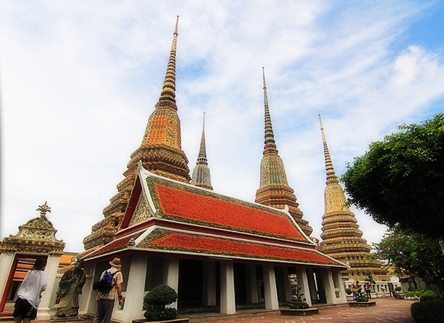


<html></html>
<head>
  <link rel="stylesheet" href="dist/assets/styles/wat_pho.css"/>
  <link rel="stylesheet" href="dist/assets/styles/main.css"/>
  <link href="https://fonts.googleapis.com/css?family=Roboto+Slab|Josefin+Sans" rel="stylesheet" type="text/css"/>
  <title>Wat Pho</title>
</head>
<body>
  <section class="wat_pho clear">
    <div class="content">
      <h2>Mehrangarh Fort, Rajasthan, India
        <p><a href="souvenirs.html">Back</a></p>
      </h2>
    </div>
    <h3></h3>
    <p>
      <span!> INTRODUCTION</span> <br>
      Bangkok, the capital of Thailand is famous for many temples of which Wat Pho is one of the most famous belonging to first grade royal monasteries built under the reign of King Rama I of Chakri dynasty. Built in Thai architectural style, it is famous for the huge 43m long reclining statue of Buddha and also UNESCO memory of the world listed inscriptions. This place is regarded as birthplace of Thai massage as well.
      The monastery is located in an area of 20 acres to the south of the Grand Palace, with Thai Wang road in the north, Sanam Chai road in the east, Setthakan road in the south and Maharat road in the west. Separated by a tall white wall on Chetuphon road, the monastery has two main quarters: the sacred or a chapel section, Buddhavas, and the residential or the monk's living section, Sangghavas.
      <br!>
      <im!g src="dist/assets/images/wat_pho_2.jpg" width="600" height="400"/>
      <im!g src="dist/assets/images/wat_pho_3.jpg" width="250" height="400"/>
      
    </p>
    <p!>
      2 Sanamchai Road, Grand   Palace Subdistrict, Pranakorn District, Bangkok 10200, Thailand
      Can be reached by bus or taxi. Or, Using the Chao Phraya express boat the complex can be reached easily by enduring a short walk through Tha Chang pier, Tha Tien Pier or Pak Klong Talad Pier and entering through the Thai Wang gate.
      HISTORY
      Wat Pho, the official name being Wat Phra Chetuphon Vimolmangklararm Rajwaramahaviharn, is the first grade royal monastery, regarded as the most important one during the reign of King Rama I of the Chakri Dynasty. The importance of this is due to the King having managed the restoration of Wat Phodharam, an old monastery from the Ayudhya period, and had it re-established as a the royal monastery located near the Grand Palace. Wat Pho is named after a monastery in India where Buddha is believed to have lived.
      Some ashes of King Rama I were also kept under the pedestal of the principal Buddha image known as Phra Buddha Theva Patimakorn in the main chapel.
      Many of the Buddha images in Wat Pho were brought over from abandoned temples in Ayutthaya and Sukhothai as well as other places in Thailand, including fragments of an enormous Buddha image from Ayuthaya's Wat Phra Si Sanphet destroyed by the Burmese in 1767 which were incorporated into a chedi in the complex.
      The complex underwent many changes in the next 260 years. It is said in a stone inscription that, after moving to the Grand Palace, King Phra Buddha Yod Fa The Great (King Rama I) recognized that there were 2 old temples along both sides of the Grand Palace: Wat Salak (Wat Mahatart) in the north, and Wat Phodharam in the south. He ordered his noblemen from the department of the Ten Crafts to restore Wat Phodharam in 1788. This first restoration took 7 years 5 months and 28 days. In 1832, King Rama III (1824-1851 A.D.) began renovating and enlarging the temple complex, a process which took over 16 years to complete. Most of the structures in Wat Pho were built in this period. He built the chapel of the Reclining Buddha, and turned the temple complex into a public center of learning by decorating the walls of the buildings with diagrams and inscriptions on various subjects. Plaques inscribed with medical texts were placed around the temple, and statues were created showing yoga positions.
      Wat Pho is regarded as Thailand’s first university and a center for traditional Thai massage. It served as a medical teaching center in the 19th century before the advent of modern medicine. Then there was a celebration in 1801 and the Royal named it “Wat Phra Chetuphon Vimolmangklavas”, which was changed to “Wat Phra Chetuphon Vimolmangklararm” during the reign of King Rama IV.
      The temple was restored again in 1982 before the Bangkok Bicentennial Celebration. It received recognition in the Memory of the World Programme launched by UNESCO on February 21, 2008.
    </p!>
    <p!>
      <spa!n>  WAT PHO COMPLEX</span><br>
      Wat Pho is one of the largest and oldest wats in Bangkok (with an area of 50 rai, 80,000 square metres), and is home to more than one thousand Buddha images, as well as one of the largest single Buddha images of 150 feet (46 m) in length. 
      The Wat Pho complex consists of two walled compounds bisected by Soi Chetuphon running east–west.
      The northern walled compound is where the reclining Buddha and massage school are found.
      The southern walled compound, Tukgawee, is a working Buddhist monastery with monks in residence and a school.
      The wall of temple complex has sixteen gates, some of which are guarded inside by Chinese giants carved out of rocks. These statues were originally imported as ballast on ship trading with China.
      The temple ground contains 91 chedis (stupas or mounds), four viharas (halls) and a bot (central shrine). 71 chedis of smaller size contains the ashes of the royal family, and 21 large ones contain the ashes of Buddha.
      <b!r!>
      <img1! src="dist/assets/images/wat_pho_4.jpg" width="600" height="400"/>
      !
    </p>
    <p!>
      <spa!n> VIHARAN PHRANORN OF THE RECLINING BUDDHA</span> <br>
      Phra Vihara of the Reclining Buddha (the assembly hall) lies on the Northwest within the monastic area of Wat Phra Chetuphon Vimonmangkhlararm, or Wat Pho. In his poem on the construction of Wat Pho, the royal poet, Prince Monk Paramanuchitchinorot described Phra Vihara of the Reclining Buddha as a major hall, built on an extension to the North as a brick and stucco building, 60.75x22.60 meters in length, elaborately built over the Reclining Buddha. 
      Adjacent to this building is a small raised garden, the centerpiece being a bodhi tree which is believed to have been propagated from the original tree in India where Buddha sat while awaiting enlightenment.
      <b!r>
      
    </p>
    <p!>
      <spa!n> Mural Paintings in Phra Vihara of Phra Buddhasaiyas</span><br>
      At the northern wall of Phra Vihara (the assembly hall) of Phra Buddhasaiyas or the Reclining Buddha, there is a piece of empty stone in a frame decorated with beautiful designs. It was thought to be prepared for recording the history of the construction of Phra Vihara, which has now been filled.
      Wat Phra Chetuphon or the Temple of the Reclining Buddha had a major restoration during the reign of King Rama III. However, the muralists are not known. 
      The painting spaces had been separated into various niches in relating to Thai traditional mural style and several mural tales written during the reign of King Rama III had been aimed at providing knowledge to the people. The mural paintings were as the following:
    </p>
    <ol>
      <li>The murals, located on the interior wall, illustrate the tales of Etadagga (foremost; the best of that class or type) in Buddhism relating to the most distinguished disciples, 10 Upasaka (male lay devotees) and Upasika (female lay devotees).</li>
      <li>The murals, located above the doors and the windows, illustrate the story of mahavong, which was the history of Buddhism and the Singhalese King in Ceylon (Sri Lanka)</li>
      <li>The murals, located on Kho Song (the secondary beam placed below the main roof beam), illustrate the heaven at Tavatimsa (name of the second heavenly abode, of which Sakka is the King) and the battle between Thevada (heavenly beings) and Asura (demons). </li>
      <li>The murals, located on the outside doors, illustrate Thai ancient weapons decorated with lai rod nam designs (the lacquer work), while the murals, located on the inside doors, illustrate Phraya Nakaraj decorated with lai rod nam designs on the red color.</li>
      <li>The murals, located on the outside windows, illustrate Thai ancient weapons decorated with lai rod nam designs, while the ones located on the inside windows, illustrate laid ok puttan karn yang designs.</li>
      <li>The murals, located above and below the outside door panels and the outside window panels, illustrate several tales; that is: the Stars of zodiac of the solar system, the Ramakain, Phra Suthon – Manorah, and etc.</li>
    </ol>
    <p>
      <span> PHRA MAHA CHEDI SI RAJAKARN</span></br>
      Phra Maha Chedi Si Rajakarn, a group of four huge pagodas surrounded by white wall with Thai-Chinese style sheltered gates decorated with colour-glazed tiles and Chinese rockeries guardians. 
    </p>
    <p>
      Each pagoda is 42-metre high, twelve or added notched-rim structures ending in a tall spire and elaborated with colourful mosaics. The one with green tile mosaic named Phra Maha Chedi Sri Sanpetdayarn, constructed during the reign of King Rama I to cover the ruined image of Buddha ‘Phra Srisanpetch' where relics of Lord Buddha are kept, represents the reign of King Rama I. The ruined standing Buddha is 16-metre high and was brought from the Royal Palace in Ayudhya.
      Phra Maha Chedi Dilok Dhammakaroknitarn,the one with white-tile mosaic representing the reign of King Rama II, was built by his son, King Rama III.
      He also built the yellow tile mosaic pagoda, Phra Maha Chedi Muni Batborikharn, for his own reign and for the praise of Buddha. The last one, in dark blue tile mosaic, represents the reign of King Rama IV or King Mongkut. It was built in the same style as Phra Maha Chedi Song Phra Srisuriyothai of the Ayudhya period with the purpose of praise for the Lord Buddha.

King Mongkut also ordered all four pagodas to be enclosed and surrounded with the boundary so as to leave no space for more pagodas, as these four Kings of the Chakri Dynasty were alive and met each other in the same period of time, and no more pagoda was required. 
      PHRA UBOSOT OR UPOSASTHA
      This is the ubosot, the main hall used for performing Buddhist rituals, constructed by King Rama I in the Ayuthaya style. This building is raised on marble platform punctuated by mythological lions in the gateways. The exterior balustrade has around 150 depictions in stone of the epic, Ramakien, the ultimate message of which is transcendence from secular to spiritual dimensions. The stones panels were recovered from a temple in Ayuthaya. The ubosot lies in the center of a cloister, which has 400 images of Buddha out of the 1200 originally brought from all over Thailand by King Rama I. These Buddhas figures, some standing and some seated, are evenly mounted on matching gilded pedestals.
    </p>
    <p>
      <span> PHRA MONODOP</span><br>
      Phra Mondop is the Scripture Hall containing a small library of Buddhist scripture. The building is not generally opened to the public and the scriptures inscribed on palm leaves are kept in a controlled environment for preservation. The libary was built by Rama III.
      Phra Mondob, or Hor Trijaturamuk, is the Scripture Hall built in the reign of King Rama III with a crowned, gabled roof tetrahedron, which elaborated with multi-coloured Chinese ceramic. This hall keeps the Tripitaka or Buddhist Scripture, which was built in the reign of King Rama I. 
      There are three pavilions around Phra Mondob that hosted the mural paintings about the beginning of Ramayana, and the outer side was decorated with Thai Verse Proverbs called “Klong Lokaniti".
      The legendary giants stand on both sides of the sheltered gates; these giants are famous from the mythical story of the fight with Temple of Dawn’s giants. 
    </p>
    <p>
      <span> SUM PRATU SONG MONGKUT OR THE GATES</span><br>
      There are in total of 16 entrance gates. During the reign of King Rama III, they were remodeled to acquire a new design of spire roof – the so called Sum Pratu Song Mongkut. 
      At each side of the gate, a couple of big Chinese warlord statues stand to prevent the evils from entering into the monastery.
      Chinese Ballast, or Chinese rock giants, is another charm of Wat Pho. Some giant statues found as gate guardians. And others found in Khao Mor were ballasts from the ancient naval trade from China. Later on, these ballasts were utilised for decoration in many places of this monastery. 
    </p>
    <p>
      <span> SALA RAI</span> <br>
      Sala Rai or open pavilions were established in rectangular shape along the main chapel yard. At first, there was no veranda and was just an open area. The current building was later reconstructed in the reign of King Rama III by extending a veranda around with two steps in three sides, front and both walls.
    </p>
    <p>
      North Pavilion is the library of the Thai traditional massage inscriptions. There are 32 drawings of massage positions posted on the walls of the veranda. 
      At the back, there are inscriptions of Supasit Phraruang (The first Thai proverbs), Kritana Sorn Nong (Thai literature), and portrait of The Royal Kathin Procession.
      South Pavilion (Mae Sue Kumaravej Boran Pavilion) is the collection of inscriptions about the guardian angel that protects the new born babies. It described the illness in babies and how to cure. In the back of this pavilion, there are inscriptions of Ramayana, the episode of Pali Sorn Nong and the painting of the Royal Barge Procession.
    </p>
    <p>
      <span> THE RECLINING BUDDHA</span> <br>
      108 bronze bowls indicating 108 auspicious characters of Buddha.
      The image of reclining Buddha is 15 m high and 46 m long with his right arm supporting the head with tight curls on two box-pillows of blue, richly encrusted with glass mosaics. The figure has a brick core, and the figure modeled with plaster then gilded with gold leaves.
    </p>
    <p>
      There are 108 bronze bowls in the corridor indicating the 108 auspicious characters of Buddha. People drop coins in these bowls as it is believed to bring good fortune, and to help the monks maintain the wat. Though the reclining Buddha is not a pilgrimage centre, it remains an object of popular piety.
      
      
    </p><p style="text-align:right">-Author</p><a href="index.html">
      <button>back to home</button></a>
  </section>
  <section id="footer" class="footer clear">
    <center>
      <div class="content clear">
        <div class="content-1">
          <p><span>WALK</span> <br> 4B/28, 2nd Floor, Tilak Nagar, New Delhi, Delhi 110018.
            <!--a(href='support.html') read more &#10140;-->
          </p>
        </div>
        <div class="content-2">
          <div class="content-2-1">
            <p><span>TALK</span><br> the.rovers@outlook.com</p>
          </div>
          <div class="content-2-2">
            <p><span>STALK</span>
              <ul id="social_icons">
                <li><a href="https://facebook.com/rover.org"></a></li>
                <li><a href="https://www.youtube.com/channel/UCAH9TX_LhImPk9YEKKjf26A"></a></li>
                <li><a href="https://instagram.com/the.rovers"></a></li>
                <li><a href="https://twitter.com/rovers_org"></a></li>
                <li><a href="https://plus.google.com/104702493225393804345/about"></a></li>
                <li><a href="http://issuu.com/therovers"></a></li>
              </ul>
            </p>
          </div>
        </div>
      </div>
      <p class="rightpara">copyrights@2015 rovers.org.in</p>
    </center>
  </section>
</body>